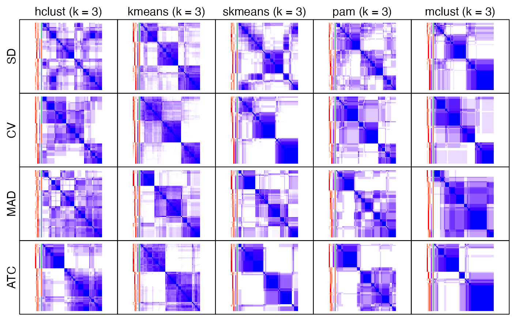
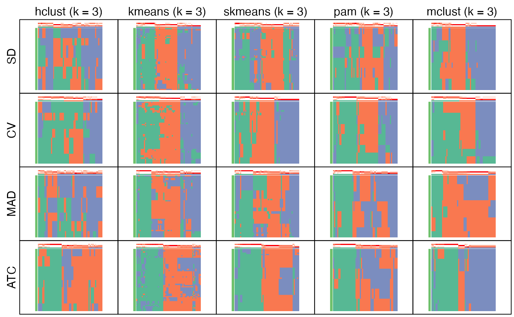

Collect plots from ConsensusPartitionList object
collect_plots-ConsensusPartitionList-method.RdCollect plots from ConsensusPartitionList object
# S4 method for ConsensusPartitionList
collect_plots(object, k = 2, fun = consensus_heatmap,
top_value_method = object@top_value_method,
partition_method = object@partition_method,
verbose = TRUE, mc.cores = 1, cores = mc.cores, ...)Arguments
- object
A
ConsensusPartitionList-classobject fromrun_all_consensus_partition_methods.- k
Number of subgroups.
- fun
Function used to generate plots. Valid functions are
consensus_heatmap,plot_ecdf,membership_heatmap,get_signaturesanddimension_reduction.- top_value_method
A vector of top-value methods.
- partition_method
A vector of partitioning methods.
- verbose
Whether to print message.
- mc.cores
Number of cores. This argument will be removed in figure versions.
- cores
Number of cores, or a
clusterobject returned bymakeCluster.- ...
other Arguments passed to corresponding
fun.
Details
Plots for all combinations of top-value methods and parittioning methods are arranged in one single page.
This function makes it easy to directly compare results from multiple methods.
Value
No value is returned.
See also
collect_plots,ConsensusPartition-method collects plots for a single ConsensusPartition-class object.
Examples
# \donttest{
data(golub_cola)
collect_plots(cola_rl, k = 3)
#> * applying consensus_heatmap() for SD:hclust.
#> * applying consensus_heatmap() for SD:kmeans.
#> * applying consensus_heatmap() for SD:skmeans.
#> * applying consensus_heatmap() for SD:pam.
#> * applying consensus_heatmap() for SD:mclust.
#> * applying consensus_heatmap() for CV:hclust.
#> * applying consensus_heatmap() for CV:kmeans.
#> * applying consensus_heatmap() for CV:skmeans.
#> * applying consensus_heatmap() for CV:pam.
#> * applying consensus_heatmap() for CV:mclust.
#> * applying consensus_heatmap() for MAD:hclust.
#> * applying consensus_heatmap() for MAD:kmeans.
#> * applying consensus_heatmap() for MAD:skmeans.
#> * applying consensus_heatmap() for MAD:pam.
#> * applying consensus_heatmap() for MAD:mclust.
#> * applying consensus_heatmap() for ATC:hclust.
#> * applying consensus_heatmap() for ATC:kmeans.
#> * applying consensus_heatmap() for ATC:skmeans.
#> * applying consensus_heatmap() for ATC:pam.
#> * applying consensus_heatmap() for ATC:mclust.

collect_plots(cola_rl, k = 3, fun = membership_heatmap)
#> * applying membership_heatmap() for SD:hclust.
#> * applying membership_heatmap() for SD:kmeans.
#> * applying membership_heatmap() for SD:skmeans.
#> * applying membership_heatmap() for SD:pam.
#> * applying membership_heatmap() for SD:mclust.
#> * applying membership_heatmap() for CV:hclust.
#> * applying membership_heatmap() for CV:kmeans.
#> * applying membership_heatmap() for CV:skmeans.
#> * applying membership_heatmap() for CV:pam.
#> * applying membership_heatmap() for CV:mclust.
#> * applying membership_heatmap() for MAD:hclust.
#> * applying membership_heatmap() for MAD:kmeans.
#> * applying membership_heatmap() for MAD:skmeans.
#> * applying membership_heatmap() for MAD:pam.
#> * applying membership_heatmap() for MAD:mclust.
#> * applying membership_heatmap() for ATC:hclust.
#> * applying membership_heatmap() for ATC:kmeans.
#> * applying membership_heatmap() for ATC:skmeans.
#> * applying membership_heatmap() for ATC:pam.
#> * applying membership_heatmap() for ATC:mclust.

collect_plots(cola_rl, k = 3, fun = get_signatures)
#> * applying get_signatures() for SD:hclust.
#> * 13/60 samples (in 1 classes) remain after filtering by silhouette (>= 0.5).
#> * Not enough samples.
#> * applying get_signatures() for SD:kmeans.
#> * 47/60 samples (in 3 classes) remain after filtering by silhouette (>= 0.5).
#> * cache hash: 166b3798779e315445295e6a4ae05627 (seed 888).
#> * calculating row difference between subgroups by Ftest.
#> * 43 signatures (71.7%) under fdr < 0.05, group_diff > 0.
#> * making heatmaps for signatures.
#> * applying get_signatures() for SD:skmeans.
#> * 19/60 samples (in 1 classes) remain after filtering by silhouette (>= 0.5).
#> * Not enough samples.
#> * applying get_signatures() for SD:pam.
#> * 36/60 samples (in 3 classes) remain after filtering by silhouette (>= 0.5).
#> * cache hash: ca5fd8466dc961e257add8dc7e395066 (seed 888).
#> * calculating row difference between subgroups by Ftest.
#> * 52 signatures (86.7%) under fdr < 0.05, group_diff > 0.
#> * making heatmaps for signatures.
#> * applying get_signatures() for SD:mclust.
#> * 47/60 samples (in 3 classes) remain after filtering by silhouette (>= 0.5).
#> * cache hash: bd1a540da0706d6d20eb0732e4419b1a (seed 888).
#> * calculating row difference between subgroups by Ftest.
#> * 41 signatures (68.3%) under fdr < 0.05, group_diff > 0.
#> * making heatmaps for signatures.
#> * applying get_signatures() for CV:hclust.
#> * 32/60 samples (in 3 classes) remain after filtering by silhouette (>= 0.5).
#> * cache hash: cc483dfc15cb9729417e8211fed1509a (seed 888).
#> * calculating row difference between subgroups by Ftest.
#> * 21 signatures (35.0%) under fdr < 0.05, group_diff > 0.
#> * making heatmaps for signatures.
#> * applying get_signatures() for CV:kmeans.
#> * 55/60 samples (in 3 classes) remain after filtering by silhouette (>= 0.5).
#> * cache hash: 7f3f8488c0140c24bff675150f7680e1 (seed 888).
#> * calculating row difference between subgroups by Ftest.
#> * 20 signatures (33.3%) under fdr < 0.05, group_diff > 0.
#> * making heatmaps for signatures.
#> * applying get_signatures() for CV:skmeans.
#> * 51/60 samples (in 3 classes) remain after filtering by silhouette (>= 0.5).
#> * cache hash: 0498c16333cafc996b0e6e3eea3752ee (seed 888).
#> * calculating row difference between subgroups by Ftest.
#> * 20 signatures (33.3%) under fdr < 0.05, group_diff > 0.
#> * making heatmaps for signatures.
#> * applying get_signatures() for CV:pam.
#> * 50/60 samples (in 3 classes) remain after filtering by silhouette (>= 0.5).
#> * cache hash: 5f3d05dec28965cf40da3da78542892c (seed 888).
#> * calculating row difference between subgroups by Ftest.
#> * 20 signatures (33.3%) under fdr < 0.05, group_diff > 0.
#> * making heatmaps for signatures.
#> * applying get_signatures() for CV:mclust.
#> * 55/60 samples (in 3 classes) remain after filtering by silhouette (>= 0.5).
#> * cache hash: 34798a7904b5bed656ed6eb66c83ad51 (seed 888).
#> * calculating row difference between subgroups by Ftest.
#> * 20 signatures (33.3%) under fdr < 0.05, group_diff > 0.
#> * making heatmaps for signatures.
#> * applying get_signatures() for MAD:hclust.
#> * 14/60 samples (in 2 classes) remain after filtering by silhouette (>= 0.5).
#> * cache hash: a39a9c8a3b976f53aec1eb2ce1c0447b (seed 888).
#> * calculating row difference between subgroups by Ftest.
#> * 19 signatures (31.7%) under fdr < 0.05, group_diff > 0.
#> * making heatmaps for signatures.
#> * applying get_signatures() for MAD:kmeans.
#> * 48/60 samples (in 3 classes) remain after filtering by silhouette (>= 0.5).
#> * cache hash: c7b59dddbb1b54521d90a3285ed688a8 (seed 888).
#> * calculating row difference between subgroups by Ftest.
#> * 52 signatures (86.7%) under fdr < 0.05, group_diff > 0.
#> * making heatmaps for signatures.
#> * applying get_signatures() for MAD:skmeans.
#> * 24/60 samples (in 2 classes) remain after filtering by silhouette (>= 0.5).
#> * cache hash: 197fe66c9c3154fc695e1f02b1052c26 (seed 888).
#> * calculating row difference between subgroups by Ftest.
#> * 30 signatures (50.0%) under fdr < 0.05, group_diff > 0.
#> * making heatmaps for signatures.
#> * applying get_signatures() for MAD:pam.
#> * 15/60 samples (in 1 classes) remain after filtering by silhouette (>= 0.5).
#> * Not enough samples.
#> * applying get_signatures() for MAD:mclust.
#> * 35/60 samples (in 3 classes) remain after filtering by silhouette (>= 0.5).
#> * cache hash: e662a063247bf611a0241fff1f546d5b (seed 888).
#> * calculating row difference between subgroups by Ftest.
#> * 33 signatures (55.0%) under fdr < 0.05, group_diff > 0.
#> * making heatmaps for signatures.
#> * applying get_signatures() for ATC:hclust.
#> * 19/60 samples (in 1 classes) remain after filtering by silhouette (>= 0.5).
#> * Not enough samples.
#> * applying get_signatures() for ATC:kmeans.
#> * 28/60 samples (in 2 classes) remain after filtering by silhouette (>= 0.5).
#> * cache hash: 857cb6959da3768dd59bf188978c1c85 (seed 888).
#> * calculating row difference between subgroups by Ftest.
#> * 16 signatures (26.7%) under fdr < 0.05, group_diff > 0.
#> * making heatmaps for signatures.
#> * applying get_signatures() for ATC:skmeans.
#> * 52/60 samples (in 3 classes) remain after filtering by silhouette (>= 0.5).
#> * cache hash: 0a522acd5f935a92b24e8845b329b589 (seed 888).
#> * calculating row difference between subgroups by Ftest.
#> * 40 signatures (66.7%) under fdr < 0.05, group_diff > 0.
#> * making heatmaps for signatures.
#> * applying get_signatures() for ATC:pam.
#> * 21/60 samples (in 1 classes) remain after filtering by silhouette (>= 0.5).
#> * Not enough samples.
#> * applying get_signatures() for ATC:mclust.
#> * 53/60 samples (in 3 classes) remain after filtering by silhouette (>= 0.5).
#> * cache hash: 4f16d338f4cb89429959b67e3a641d05 (seed 888).
#> * calculating row difference between subgroups by Ftest.
#> * 38 signatures (63.3%) under fdr < 0.05, group_diff > 0.
#> * making heatmaps for signatures.
 # }
# }